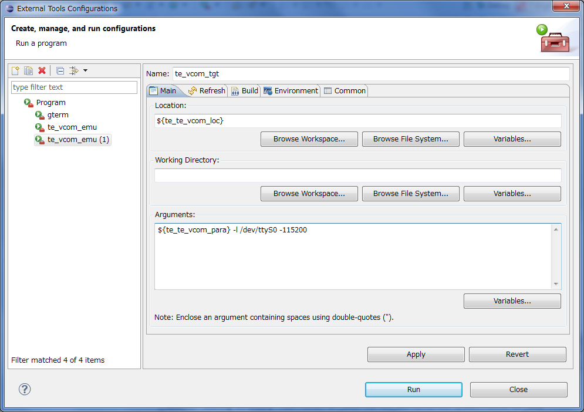

Running and Debugging (Eclipse use)
1. Console Preparation
First, set up the relay program (te_vcom) and the terminal emulator (gterm) to communicate with the target.
(1) Select the "Run" -> "External Tools" -> "External Tools Configurations" menu.
(2) Click the [+] to the left of "Program" which is shown in the left pane of the "External Tools Configurations" dialog to display "te_vcom" and "gterm".
(3) Select "te_vcom" in the left pane, enter the following settings to run in the emulator, and click the "Apply" button. "te_vcom" changes to "te_vcom_emu" in the left window pane display.
Name te_vcom_emu
Parameter ${te_te_vcom_para} -l localhost:10000
"${te_te_vcom_para}" is the setting entered under "Window" -> "Preferences" but may be overwritten by later settings.
"-l localhost:10000" is the serial port specification for connecting with the emulator. By default, it is the localhost (127.0.0.1) TCP port number 10000. Please adjust to match any changes in the emulator settings.
(4) To continue, move the mouse over "te_vcom_emu" in the left pane, right-click the mouse and select "Duplicate" from the displayed menu.
(5) Select the "te_vcom_emu(1)" which was added, enter the following settings to run on the device, and click the "Apply" button. "te_vcom_emu(1)" changes to "te_vcom_tgt" in the left window pane display.
Name te_vcom_tgt
Parameter ${te_te_vcom_para} -l /dev/ttyS0 -115200
"-l /dev/ttyS0" supports the following specification for the serial port connection with the device. "-115200" is the transmission speed (bps) setting. Please match the settings to the actual environment and device being used.
COM1 /dev/ttyS0
COM2 /dev/ttyS1
COM3 /dev/ttyS2
.....

(6) No special settings are needed for "gterm".
2. Running in the Emulator (RAM version T-Kernel)
Run the RAM version T-Kernel which was built in the emulator using the following procedure.
(1) Start the emulator. Please refer to the Emulator (QEMU-tef_em1d) Instructions for more information about how to start the emulator.
Specify "-dipsw dbgsw=on" in qeum.bat to start T-Monitor and specify the following Debug ROM image which was created in the system build.
C:\cygwin\usr\local\tef_em1d\tkernel_source\kernel\sysmain\build\tef_em1d\rom-dbg.bin
(2) Select the "Run" -> "External Tools" -> "External Tools Configurations" menu. Then select "te_vcom_emu" shown in the left pane and press the "Run" button.
Click the "Console" tab in the lower part of the Eclipse window to display te_vcom_emu[program] in the line right below the tab (area directly above the view).
(3) To continue, start "gterm" in the same way.
The console displays the "gterm" startup message, T-Monitor starts up on the emulator, and the startup message and prompt are displayed.
<< Gterm ver 2.51 : 130221 >>
T-Monitor/tef_em1d Version 2.01.00
TM>
(4) Select the following execution object file in the "C/C++ Projects View" and right-click the mouse to select "Run" -> "Run Configurations".
Execution file kernel/sysmain/build/tef_em1d/kernel-ram.sys
(5) Select "T-Engine Application" in the "Run Configurations" dialog and right-click the mouse to select "New".
(6) Specify the following for "Run file" and "Transfer file" in the "Main" tab and press the "Run" button.
Run file sysmain/build/tef_em1d/kernel-ram.sys
Transfer file sysmain/build/tef_em1d/kernel-ram.bin 30006000
(or) sysmain/build/tef_em1d/kernel-ram.mot
"30006000" is the starting address of the Transfer file's binary image. "kernel-ram.mot" (S-Format) does not require an address specification, but the transfer time will be long due to the large file size.
Pressing the "Run" button while the T-Monitor prompt "TM> " is not displayed in the console will not run the build. Click inside the console and press the Enter key to confirm the prompt display status.
(7) T-Kernel starts up after the specified "Transfer file" is loaded and then the sample program is run. The following series of messages are shown in the console.
TM> .cd /cygdrive/C/cygwin/usr/local/tef_em1d/tkernel_source/kernel
.. dir: /cygdrive/C/cygwin/usr/local/tef_em1d/tkernel_source/kernel
> .load sysmain/build/tef_em1d/kernel-ram.bin 30006000
.. LO XM,30006000 [sysmain/build/tef_em1d/kernel-ram.bin: 177392 bytes]
....*....*....*....*....*....*....*....*....*....*....*....*....*....*....*....*....*. (22174.0 bytes/sec)
Loaded: 30006000 -> 300317FF
TM> bd
T-Kernel Version 2.02.00
ConsoleIO - OK
ClockDrv - OK
SysDiskDrv - OK
ScreenDrv - OK
KbPdDrv - OK
LowKbPdDrv - OK
1 - Debug sample started.
2 - Start sample task (tid=8) and wait.
3 - Sample task started (tid=8).
4 - Delay 1000 msec.
5 - Delay 1000 msec.
6 - Delay 1000 msec.
7 - Wakeup main task.
8 - Wakeup from sample task.
9 - Sample task finished.
10 - Debug sample finished.
Push any key to shutdown the T-Kernel.
Pressing any key in the console shuts down the target. If the program is running in the emulator then the emulator will shut down.
3. Debugging in the Emulator (RAM version T-Kernel)
Run the debugging for the RAM version T-Kernel which was built for debugging using the following procedure.
The typical build directory for running builds is "kernel\sysmain\build\tef_em1d", but the build directory for debugging is "kernel\sysmain\build\tef_em1d.debug".
(1) Start the emulator and run "te_vcom_emu" and "gterm" in the same way as for a typical RAM version T-Kernel execution.
Either of the following can be specified by the emulator as the Debug ROM image. (same content)
C:\cygwin\usr\local\tef_em1d\tkernel_source\kernel\sysmain\build\tef_em1d\rom-dbg.bin
C:\cygwin\usr\local\tef_em1d\tkernel_source\kernel\sysmain\build\tef_em1d.debug\rom-dbg.bin
(2) Select the following execution object file in the "C/C++ Projects View" and right-click the mouse to select "Debug As" -> "Debug Configurations".
Execution file kernel/sysmain/build/tef_em1d.debug/kernel-ram.sys
(3) Select "T-Engine Application" in the "Debug Configurations" dialog and right-click the mouse to select "New". Change the name displayed on the right-hand side from "kernel-ram(1)" to "kernel-ram-dbg".
The displayed "kernel-ram" is for typical execution, so we will create a new one for debug execution.
(4) Specify the following for "Run file" and "Transfer file" in the "Main" tab and press the "Apply" button.
Run file sysmain/build/tef_em1d.debug/kernel-ram.sys
Transfer file sysmain/build/tef_em1d.debug/kernel-ram.bin 30006000
(or) sysmain/build/tef_em1d.debug/kernel-ram.mot
(5) Confirm that the "Stop on startup at" in the "Debugger" tab is set to "usermain" and press the "Debug As" button.
(6) T-Kernel starts up after the specified "Transfer file" is loaded and then stops at the beginning of "usermain". At the same time, the "Confirm Perspective Switch" dialog is displayed switch to the "Debug" perspective.
If the "Console" display unintentionally changes, press the "Display Selected Console" button among the buttons on the right-hand side of the "Console" tab and select "gterm".
You can also press "Pin Console" to prevent the display from changing.
(7) Set the necessary breakpoints here to perform debugging.
Use the "Resume", "Step Into", "Step Over", and "Step Return" function buttons which are listed on the right-hand side of the "Debug As" view.
To set a breakpoint, double-click the gray area on the far left of the line in the "source code" view where you wish to add a breakpoint or right-click the mouse and select "Toggle Breakpoint". A breakpoint marker is inserted on the far left of the line.
Execution cannot be forcefully interrupted to return control to the debugger unless a breakpoint is encountered, so be sure to set an appropriate breakpoint before restarting the execution.
4. Running in the Emulator (ROM version T-Kernel)
Run the ROM version T-Kernel which was built in the emulator using the following procedure. In this case, the Eclipse console is used as a simple debugger console.
(1) Start the emulator and run "te_vcom_emu" and "gterm" in the same way as for a typical RAM version T-Kernel execution.
Specify the following ROM image in the emulator.
C:\cygwin\usr\local\tef_em1d\tkernel_source\kernel\sysmain\build\tef_em1d\rom.bin
(2) The console displays the "gterm" startup message, T-Monitor starts up on the emulator, and the startup message and prompt are displayed.
<< Gterm ver 2.51 : 130221 >>
T-Monitor/tef_em1d Version 2.01.00
TM>
(3) In this case, enter the T-Monitor "BD" command to start the execution.
TM> BD
T-Kernel Version 2.02.00
ConsoleIO - OK
::::::
5. Running on the Device
The procedure to run the program on the device (T-Engine reference board - tef_em1d) is almost the same as the emulator.
Please refer above to Running in the Emulator (RAM version T-Kernel), Debugging in the Emulator (RAM version T-Kernel), Running in the Emulator (ROM version T-Kernel). However, only the following point differs for the device.
Start "te_vcom_tgt", which specified the device and connecting serial port, not "te_vcom_emu".
T-Monitor must be written to the Flash ROM of the device. The device's DIP switch must also be set for T-Monitor startup.
After connecting the device and the serial cable, start "te_vcom_tgt" and "gterm", and then turn on the device's power switch or press the reset button. The T-Monitor startup message and prompt are displayed on the console.
Write the following ROM information (for RAM execution) to the Flash ROM when running the RAM version T-Kernel.
C:\cygwin\usr\local\tef_em1d\tkernel_source\bin\tef_em1d\rominfo-ram.mot
To write to Flash ROM, start "te_vcom_tgt" and "gterm", and enter the following commands with the T-Monitor prompt displayed.
TM> .flload /usr/local/tef_em1d/tkernel_source/bin/tef_em1d/rominfo-ram.mot
Write both the following ROM information (for ROM execution) and the Kernel ROM image to the Flash ROM when running the ROM version T-Kernel.
C:\cygwin\usr\local\tef_em1d\tkernel_source\bin\tef_em1d\rominfo-rom.mot
C:\cygwin\usr\local\tef_em1d\tkernel_source\bin\tef_em1d\kernel-rom.mot
Enter each of the following commands to write to Flash ROM.
TM> .flload /usr/local/tef_em1d/tkernel_source/bin/tef_em1d/rominfo-rom.mot
TM> .flload /usr/local/tef_em1d/tkernel_source/bin/tef_em1d/kernel-rom.mot